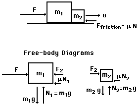

HTML and JavaScript templates
A table with an image tag

|
An example of the Javascript URL
Link to Newton's second law
A JavaScript script with functions and conversion from metric to U.S. common units.
A form with onChange handlers
|
 Some special symbols:
Degree sign °
theta θ
tau τ
pi π
big delta Δ
small delta δ
alpha α
beta β
gamma γ
big omega Ω
psi for wavefunction Ψ
Mathematical functions in Javascript:
example of nested if statements.
function atan7(x,y){fh=document.forms[1];if (x>0){if (y>=0) return 180*Math.atan(y/x)/Math.PI;if (y<0) return 180*Math.atan(y/x)/Math.PI-(-1)*360};if (x<0){if (y>=0) return 180-180*Math.atan(-y/x)/Math.PI;if (y<0) return -180-(-1)*180*Math.atan(y/x)/Math.PI-(-1)*360}}
Testing for odd and even using the Modulo function:
function ecal(){fh=document.forms[0];def();aa=fh.a.value;zz=fh.z.value;fh.n.value=nn=aa-zz;eeo=15.75*aa-17.8*Math.pow(aa, 2/3)-0.711*sq(zz)/Math.pow(aa,1/3)-23.7*sq(aa-2*zz)/aa;fh.eo.value=eeo;corr=11.18/Math.sqrt(aa);if(zz%2==1){if(nn%2==1){eeb=eeo-corr;fh.ee.value=0;fh.oo.value=-corr};if(nn%2==0){eeb=eeo;fh.ee.value=0,fh.oo.value=0}};if(zz%2==0){if(nn%2==0){eeb=eeo-(-1)*corr;fh.ee.value=corr;fh.oo.value=0};if(nn%2==1){eeb=eeo;fh.ee.value=0, fh.oo.value=0}};fh.eb.value=eeb}
Using a While loop, modulo, round to calculate binary from decimal numbers.
Absolute value Math.abs()
Some special symbols:
Degree sign °
theta θ
tau τ
pi π
big delta Δ
small delta δ
alpha α
beta β
gamma γ
big omega Ω
psi for wavefunction Ψ
Mathematical functions in Javascript:
example of nested if statements.
function atan7(x,y){fh=document.forms[1];if (x>0){if (y>=0) return 180*Math.atan(y/x)/Math.PI;if (y<0) return 180*Math.atan(y/x)/Math.PI-(-1)*360};if (x<0){if (y>=0) return 180-180*Math.atan(-y/x)/Math.PI;if (y<0) return -180-(-1)*180*Math.atan(y/x)/Math.PI-(-1)*360}}
Testing for odd and even using the Modulo function:
function ecal(){fh=document.forms[0];def();aa=fh.a.value;zz=fh.z.value;fh.n.value=nn=aa-zz;eeo=15.75*aa-17.8*Math.pow(aa, 2/3)-0.711*sq(zz)/Math.pow(aa,1/3)-23.7*sq(aa-2*zz)/aa;fh.eo.value=eeo;corr=11.18/Math.sqrt(aa);if(zz%2==1){if(nn%2==1){eeb=eeo-corr;fh.ee.value=0;fh.oo.value=-corr};if(nn%2==0){eeb=eeo;fh.ee.value=0,fh.oo.value=0}};if(zz%2==0){if(nn%2==0){eeb=eeo-(-1)*corr;fh.ee.value=corr;fh.oo.value=0};if(nn%2==1){eeb=eeo;fh.ee.value=0, fh.oo.value=0}};fh.eb.value=eeb}
Using a While loop, modulo, round to calculate binary from decimal numbers.
Absolute value Math.abs()
|
Index
Newton's laws
Standard mechanics problems |